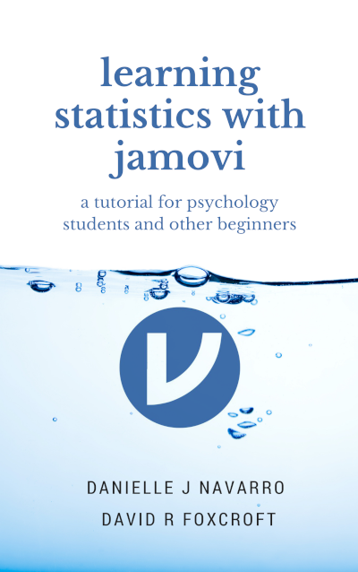

用jamovi上手統計學

作者序
本書內容涵蓋各大學心理學、公共衛生或社會科學大學部基礎統計的學習項目。本書同時提供以jamovi做為處理資料的工具操作指引。如同一般的統計教科書，本書從描述統計及統計圖開始，接著討論機率理論，取樣及估計，還有虛無假設檢定。理解理論概念之後，接著學習統計方法：包括列聯表分析、相關、t檢定、迴歸、變異數分析以及因素分析。最後一章將介紹貝氏統計。
譯者序
原書作者Danielle Navarro與David Foxcroft是任教於澳洲阿得雷德大學心理學系，教授統計學的講師，本書內容是根據Danielle Navarro自行開發的講義Learning Statistics with R改編，書中有許多例子是採用澳洲政府或民間機構收集的資料。除了解釋統計原理，原作者的大部分用詞接近日常對話，因此除了討論重要觀念的部分，中文翻譯儘可能使用日常用語。如果有部分內容需要進一步解釋或增加說明，可參考譯者自行增加的腳註。 本書使用的專用名詞譯名，主要取自國家教育研究院營運的樂詞網以及中文維基百科。未提供翻譯的名詞皆保留英文名稱；不同領域有不一樣的翻譯名詞，譯者儘可能優先考慮心理學或統計學的譯名，未來學術界對於專有名詞有統一翻譯，本書將配合更新。本書內容使用OpenAI開發的自然語言聊天機器人ChatGPT及Anthropic開發的大型語言模型Claude 2.1進行初步翻譯，再由譯者編修。有關中文版內容的任何指教，歡迎到本書github儲存庫的討論區提出。
- 使用這本電子書修習任何實體或線上課程的同學，請先觀看導覽影片，了解如何使用這本書及jamovi開發團隊的資源學習。
引用建議(英): Navarro DJ and Foxcroft DR (2022). learning statistics with jamovi: a tutorial for psychology students and other beginners. (Version 0.75). DOI: 10.24384/hgc3-7p15